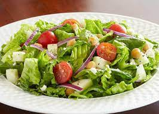

Fried Chicken
When it comes to chicken there just isn’t anything more delicious than a juicy, crusty piece of
finger-licking good fried chicken. It might seem intimidating to fry your own chicken, but it’s actually
pretty straightforward and it puts grocery store and fast food fried chicken to shame. If you have a
thermometer for the oil and a timer, you can produce fail-proof fried chicken. If you’ve ever wanted to
make your own fried chicken, now is the time to try!

Fried Rice
Fried rice has been a kitchen staple since as early as the Sui Dynasty in China. The primary
reason for the continued popularity and ubiquity of this dish comes down to two things: its adaptability
and the fact that people almost always cook too much rice.
Fried rice is a quick and delicious way to transform leftovers into something delicious! Though we
sometimes think of certain ingredients being typical (eggs, garlic) the only thing you need to make
fried rice is heat, rice, and oil.

Salad
When it comes to salad there just isn’t anything more delicious than a juicy, crusty piece of
finger-licking good chicken salad. It might seem intimidating to fry your own salad, but it’s actually
pretty straightforward and it puts grocery store and fast food chicken salad to shame. If you have a
thermometer for the oil and a timer, you can produce fail-proof chicken salad. If you’ve ever wanted to
make your own chicken salad, now is the time to try!